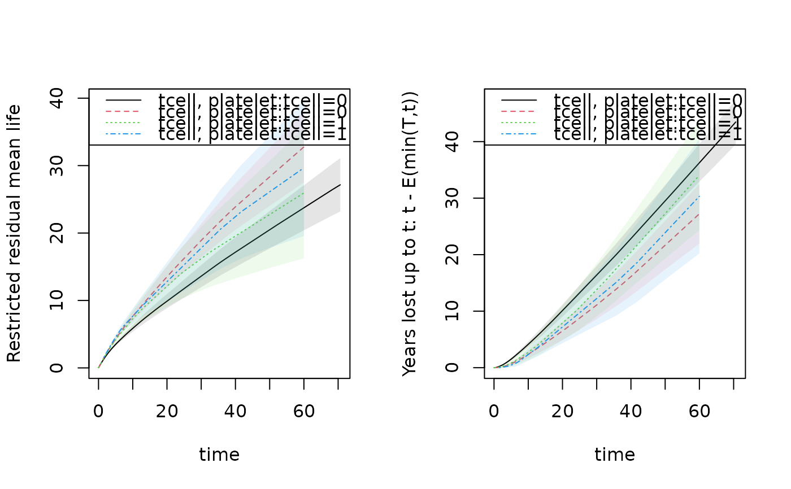

Restricted mean for stratified Kaplan-Meier or Cox model with martingale standard errors
Source:R/phreg.R
resmean.phreg.RdRestricted mean for stratified Kaplan-Meier or stratified Cox with martingale standard error. Standard error is computed using linear interpolation between standard errors at jump-times. Plots gives restricted mean at all times. Years lost can be computed based on this and decomposed into years lost for different causes using the cif.yearslost function that is based on integrating the cumulative incidence functions. One particular feature of these functions are that the restricted mean and years-lost are computed for all event times as functions and can be plotted/viewed. When times are given and beyond the last event time withn a strata the curves are extrapolated using the estimates of cumulative incidence.
Examples
library(mets)
data(bmt); bmt$time <- bmt$time+runif(408)*0.001
out1 <- phreg(Surv(time,cause!=0)~strata(tcell,platelet),data=bmt)
rm1 <- resmean.phreg(out1,times=10*(1:6))
summary(rm1)
#> strata times rmean se.rmean lower upper
#> tcell.0..platelet.0 0 10 5.863343 0.2565969 5.381388 6.388463
#> tcell.0..platelet.1 1 10 7.631912 0.3423881 6.989500 8.333367
#> tcell.1..platelet.0 2 10 7.277574 0.7092954 6.012095 8.809422
#> tcell.1..platelet.1 3 10 7.670141 0.5624556 6.643307 8.855691
#> tcell.0..platelet.0.1 0 20 9.888956 0.5393853 8.886328 11.004709
#> tcell.0..platelet.1.1 1 20 13.506402 0.8000279 12.025973 15.169075
#> tcell.1..platelet.0.1 2 20 12.103008 1.5545678 9.409379 15.567744
#> tcell.1..platelet.1.1 3 20 12.787705 1.4675869 10.211842 16.013312
#> tcell.0..platelet.0.2 0 30 13.602944 0.8315415 12.067001 15.334388
#> tcell.0..platelet.1.2 1 30 18.901242 1.2693320 16.570173 21.560242
#> tcell.1..platelet.0.2 2 30 16.191174 2.4006207 12.108018 21.651283
#> tcell.1..platelet.1.2 3 30 17.766060 2.4422086 13.570031 23.259556
#> tcell.0..platelet.0.3 0 40 17.159956 1.1235963 15.093201 19.509717
#> tcell.0..platelet.1.3 1 40 23.883637 1.7373039 20.710175 27.543375
#> tcell.1..platelet.0.3 2 40 19.549213 3.2030923 14.179532 26.952350
#> tcell.1..platelet.1.3 3 40 22.433331 3.3838515 16.691610 30.150138
#> tcell.0..platelet.0.4 0 50 20.482470 1.4110537 17.895439 23.443490
#> tcell.0..platelet.1.4 1 50 28.330687 2.1961768 24.337306 32.979320
#> tcell.1..platelet.0.4 2 50 22.746016 4.0537083 16.040114 32.255460
#> tcell.1..platelet.1.4 3 50 26.115632 4.2306906 19.011101 35.875159
#> tcell.0..platelet.0.5 0 60 23.741477 1.7038099 20.626292 27.327148
#> tcell.0..platelet.1.5 1 60 32.771213 2.6865780 27.906873 38.483438
#> tcell.1..platelet.0.5 2 60 25.942819 4.9476027 17.851839 37.700870
#> tcell.1..platelet.1.5 3 60 29.671600 5.1599202 21.101639 41.722060
#> years.lost
#> tcell.0..platelet.0 4.136657
#> tcell.0..platelet.1 2.368088
#> tcell.1..platelet.0 2.722426
#> tcell.1..platelet.1 2.329859
#> tcell.0..platelet.0.1 10.111044
#> tcell.0..platelet.1.1 6.493598
#> tcell.1..platelet.0.1 7.896992
#> tcell.1..platelet.1.1 7.212295
#> tcell.0..platelet.0.2 16.397056
#> tcell.0..platelet.1.2 11.098758
#> tcell.1..platelet.0.2 13.808826
#> tcell.1..platelet.1.2 12.233940
#> tcell.0..platelet.0.3 22.840044
#> tcell.0..platelet.1.3 16.116363
#> tcell.1..platelet.0.3 20.450787
#> tcell.1..platelet.1.3 17.566669
#> tcell.0..platelet.0.4 29.517530
#> tcell.0..platelet.1.4 21.669313
#> tcell.1..platelet.0.4 27.253984
#> tcell.1..platelet.1.4 23.884368
#> tcell.0..platelet.0.5 36.258523
#> tcell.0..platelet.1.5 27.228787
#> tcell.1..platelet.0.5 34.057181
#> tcell.1..platelet.1.5 30.328400
par(mfrow=c(1,2))
plot(rm1,se=1)
plot(rm1,years.lost=TRUE,se=1)

## comparing populations, can also be done using rmstIPCW via influence functions
rm1 <- resmean.phreg(out1,times=40)
e1 <- estimate(rm1)
e1
#> Estimate Std.Err 2.5% 97.5% P-value
#> p1 17.16 1.124 14.96 19.36 1.169e-52
#> p2 23.88 1.737 20.48 27.29 5.270e-43
#> p3 19.55 3.203 13.27 25.83 1.039e-09
#> p4 22.43 3.384 15.80 29.07 3.368e-11
estimate(e1,rbind(c(1,-1,0,0)))
#> Estimate Std.Err 2.5% 97.5% P-value
#> [p1] - [p2] -6.724 2.069 -10.78 -2.669 0.001155
#>
#> Null Hypothesis:
#> [p1] - [p2] = 0
## years.lost decomposed into causes
drm1 <- cif.yearslost(Event(time,cause)~strata(tcell,platelet),data=bmt,times=10*(1:6))
par(mfrow=c(1,2)); plot(drm1,cause=1,se=1); plot(drm1,cause=2,se=1);
 summary(drm1)
#> $estimate
#> strata times intF_1 intF_2 se.intF_1 se.intF_2
#> tcell.0..platelet.0 0 10 3.117728 1.0189288 0.2487176 0.1703638
#> tcell.0..platelet.1 1 10 1.710936 0.6571526 0.3238412 0.1870601
#> tcell.1..platelet.0 2 10 1.876143 0.8462836 0.6339082 0.4726466
#> tcell.1..platelet.1 3 10 1.358636 0.9712223 0.5303228 0.3617247
#> tcell.0..platelet.0.1 0 20 7.517571 2.5934726 0.5441135 0.3861255
#> tcell.0..platelet.1.1 1 20 4.230955 2.2626433 0.7414105 0.5327638
#> tcell.1..platelet.0.1 2 20 4.568450 3.3285417 1.4876793 1.1718383
#> tcell.1..platelet.1.1 3 20 3.569521 3.6427738 1.3003137 1.1906605
#> tcell.0..platelet.0.2 0 30 12.105134 4.2919224 0.8508105 0.6161428
#> tcell.0..platelet.1.2 1 30 6.884188 4.2145701 1.1741030 0.9057072
#> tcell.1..platelet.0.2 2 30 7.260758 6.5480678 2.3532886 1.9703396
#> tcell.1..platelet.1.2 3 30 5.780405 6.4535344 2.0925102 2.0815222
#> tcell.0..platelet.0.3 0 40 16.718644 6.1214006 1.1626277 0.8509971
#> tcell.0..platelet.1.3 1 40 9.728017 6.3883460 1.6094995 1.2998361
#> tcell.1..platelet.0.3 2 40 9.953066 10.4977217 3.2212066 2.8144091
#> tcell.1..platelet.1.3 3 40 8.302374 9.2642951 2.8718027 2.9840891
#> tcell.0..platelet.0.4 0 50 21.367828 8.1497025 1.4766462 1.0945185
#> tcell.0..platelet.1.4 1 50 12.979249 8.6900648 2.0475172 1.7124440
#> tcell.1..platelet.0.4 2 50 12.645373 14.6086108 4.0899639 3.7302613
#> tcell.1..platelet.1.4 3 50 11.809312 12.0750558 3.6736890 3.8902225
#> tcell.0..platelet.0.5 0 60 26.017012 10.2415106 1.7930406 1.3471492
#> tcell.0..platelet.1.5 1 60 16.237003 10.9917837 2.5097421 2.1389931
#> tcell.1..platelet.0.5 2 60 15.337681 18.7194999 4.9591193 4.6873851
#> tcell.1..platelet.1.5 3 60 15.442583 14.8858164 4.5899631 4.7979021
#> total.years.lost lower_intF_1 upper_intF_1 lower_intF_2
#> tcell.0..platelet.0 4.136657 2.6664497 3.645382 0.7342160
#> tcell.0..platelet.1 2.368088 1.1806486 2.479401 0.3761574
#> tcell.1..platelet.0 2.722426 0.9675272 3.638049 0.2832191
#> tcell.1..platelet.1 2.329859 0.6321933 2.919824 0.4680527
#> tcell.0..platelet.0.1 10.111044 6.5233175 8.663364 1.9370986
#> tcell.0..platelet.1.1 6.493598 3.0010849 5.964836 1.4262364
#> tcell.1..platelet.0.1 7.896992 2.4131367 8.648800 1.6694832
#> tcell.1..platelet.1.1 7.212295 1.7479626 7.289331 1.9196070
#> tcell.0..platelet.0.2 16.397056 10.5473368 13.893011 3.2393246
#> tcell.0..platelet.1.2 11.098758 4.9281026 9.616693 2.7658642
#> tcell.1..platelet.0.2 13.808826 3.8467904 13.704570 3.6306405
#> tcell.1..platelet.1.2 12.233940 2.8433007 11.751512 3.4296609
#> tcell.0..platelet.0.3 22.840044 14.5884049 19.159946 4.6614042
#> tcell.0..platelet.1.3 16.116363 7.0338498 13.454127 4.2874053
#> tcell.1..platelet.0.3 20.450787 5.2780598 18.768926 6.2071231
#> tcell.1..platelet.1.3 17.566669 4.2147370 16.354380 4.9275936
#> tcell.0..platelet.0.4 29.517530 18.6610983 24.467159 6.2635995
#> tcell.0..platelet.1.4 21.669313 9.5272998 17.681914 5.9059153
#> tcell.1..platelet.0.4 27.253984 6.7084592 23.836393 8.8564030
#> tcell.1..platelet.1.4 23.884368 6.4184377 21.728005 6.4218095
#> tcell.0..platelet.0.5 36.258523 22.7297314 29.779715 7.9140457
#> tcell.0..platelet.1.5 27.228787 11.9932328 21.982420 7.5062836
#> tcell.1..platelet.0.5 34.057181 8.1384451 28.905332 11.4591489
#> tcell.1..platelet.1.5 30.328400 8.6242095 27.651622 7.9144140
#> upper_intF_2
#> tcell.0..platelet.0 1.414047
#> tcell.0..platelet.1 1.148055
#> tcell.1..platelet.0 2.528769
#> tcell.1..platelet.1 2.015313
#> tcell.0..platelet.0.1 3.472255
#> tcell.0..platelet.1.1 3.589556
#> tcell.1..platelet.0.1 6.636299
#> tcell.1..platelet.1.1 6.912770
#> tcell.0..platelet.0.2 5.686555
#> tcell.0..platelet.1.2 6.422080
#> tcell.1..platelet.0.2 11.809815
#> tcell.1..platelet.1.2 12.143506
#> tcell.0..platelet.0.3 8.038682
#> tcell.0..platelet.1.3 9.518803
#> tcell.1..platelet.0.3 17.754145
#> tcell.1..platelet.1.3 17.417663
#> tcell.0..platelet.0.4 10.603751
#> tcell.0..platelet.1.4 12.786710
#> tcell.1..platelet.0.4 24.096861
#> tcell.1..platelet.1.4 22.704967
#> tcell.0..platelet.0.5 13.253467
#> tcell.0..platelet.1.5 16.095756
#> tcell.1..platelet.0.5 30.579904
#> tcell.1..platelet.1.5 27.997971
#>
## comparing populations, can also be done using rmstIPCW via influence functions
drm1 <- cif.yearslost(Event(time,cause)~strata(tcell,platelet),data=bmt,times=40)
summary(drm1)
#> $estimate
#> strata times intF_1 intF_2 se.intF_1 se.intF_2
#> tcell=0, platelet=0 0 40 16.718644 6.121401 1.162628 0.8509971
#> tcell=0, platelet=1 1 40 9.728017 6.388346 1.609500 1.2998361
#> tcell=1, platelet=0 2 40 9.953066 10.497722 3.221207 2.8144091
#> tcell=1, platelet=1 3 40 8.302374 9.264295 2.871803 2.9840891
#> total.years.lost lower_intF_1 upper_intF_1 lower_intF_2
#> tcell=0, platelet=0 22.84004 14.588405 19.15995 4.661404
#> tcell=0, platelet=1 16.11636 7.033850 13.45413 4.287405
#> tcell=1, platelet=0 20.45079 5.278060 18.76893 6.207123
#> tcell=1, platelet=1 17.56667 4.214737 16.35438 4.927594
#> upper_intF_2
#> tcell=0, platelet=0 8.038682
#> tcell=0, platelet=1 9.518803
#> tcell=1, platelet=0 17.754145
#> tcell=1, platelet=1 17.417663
#>
## first cause
e1 <- estimate(drm1)
estimate(e1,rbind(c(1,-1,0,0)))
#> Estimate Std.Err 2.5% 97.5% P-value
#> [p1] - [p2] 6.991 1.985 3.099 10.88 0.0004302
#>
#> Null Hypothesis:
#> [p1] - [p2] = 0
summary(drm1)
#> $estimate
#> strata times intF_1 intF_2 se.intF_1 se.intF_2
#> tcell.0..platelet.0 0 10 3.117728 1.0189288 0.2487176 0.1703638
#> tcell.0..platelet.1 1 10 1.710936 0.6571526 0.3238412 0.1870601
#> tcell.1..platelet.0 2 10 1.876143 0.8462836 0.6339082 0.4726466
#> tcell.1..platelet.1 3 10 1.358636 0.9712223 0.5303228 0.3617247
#> tcell.0..platelet.0.1 0 20 7.517571 2.5934726 0.5441135 0.3861255
#> tcell.0..platelet.1.1 1 20 4.230955 2.2626433 0.7414105 0.5327638
#> tcell.1..platelet.0.1 2 20 4.568450 3.3285417 1.4876793 1.1718383
#> tcell.1..platelet.1.1 3 20 3.569521 3.6427738 1.3003137 1.1906605
#> tcell.0..platelet.0.2 0 30 12.105134 4.2919224 0.8508105 0.6161428
#> tcell.0..platelet.1.2 1 30 6.884188 4.2145701 1.1741030 0.9057072
#> tcell.1..platelet.0.2 2 30 7.260758 6.5480678 2.3532886 1.9703396
#> tcell.1..platelet.1.2 3 30 5.780405 6.4535344 2.0925102 2.0815222
#> tcell.0..platelet.0.3 0 40 16.718644 6.1214006 1.1626277 0.8509971
#> tcell.0..platelet.1.3 1 40 9.728017 6.3883460 1.6094995 1.2998361
#> tcell.1..platelet.0.3 2 40 9.953066 10.4977217 3.2212066 2.8144091
#> tcell.1..platelet.1.3 3 40 8.302374 9.2642951 2.8718027 2.9840891
#> tcell.0..platelet.0.4 0 50 21.367828 8.1497025 1.4766462 1.0945185
#> tcell.0..platelet.1.4 1 50 12.979249 8.6900648 2.0475172 1.7124440
#> tcell.1..platelet.0.4 2 50 12.645373 14.6086108 4.0899639 3.7302613
#> tcell.1..platelet.1.4 3 50 11.809312 12.0750558 3.6736890 3.8902225
#> tcell.0..platelet.0.5 0 60 26.017012 10.2415106 1.7930406 1.3471492
#> tcell.0..platelet.1.5 1 60 16.237003 10.9917837 2.5097421 2.1389931
#> tcell.1..platelet.0.5 2 60 15.337681 18.7194999 4.9591193 4.6873851
#> tcell.1..platelet.1.5 3 60 15.442583 14.8858164 4.5899631 4.7979021
#> total.years.lost lower_intF_1 upper_intF_1 lower_intF_2
#> tcell.0..platelet.0 4.136657 2.6664497 3.645382 0.7342160
#> tcell.0..platelet.1 2.368088 1.1806486 2.479401 0.3761574
#> tcell.1..platelet.0 2.722426 0.9675272 3.638049 0.2832191
#> tcell.1..platelet.1 2.329859 0.6321933 2.919824 0.4680527
#> tcell.0..platelet.0.1 10.111044 6.5233175 8.663364 1.9370986
#> tcell.0..platelet.1.1 6.493598 3.0010849 5.964836 1.4262364
#> tcell.1..platelet.0.1 7.896992 2.4131367 8.648800 1.6694832
#> tcell.1..platelet.1.1 7.212295 1.7479626 7.289331 1.9196070
#> tcell.0..platelet.0.2 16.397056 10.5473368 13.893011 3.2393246
#> tcell.0..platelet.1.2 11.098758 4.9281026 9.616693 2.7658642
#> tcell.1..platelet.0.2 13.808826 3.8467904 13.704570 3.6306405
#> tcell.1..platelet.1.2 12.233940 2.8433007 11.751512 3.4296609
#> tcell.0..platelet.0.3 22.840044 14.5884049 19.159946 4.6614042
#> tcell.0..platelet.1.3 16.116363 7.0338498 13.454127 4.2874053
#> tcell.1..platelet.0.3 20.450787 5.2780598 18.768926 6.2071231
#> tcell.1..platelet.1.3 17.566669 4.2147370 16.354380 4.9275936
#> tcell.0..platelet.0.4 29.517530 18.6610983 24.467159 6.2635995
#> tcell.0..platelet.1.4 21.669313 9.5272998 17.681914 5.9059153
#> tcell.1..platelet.0.4 27.253984 6.7084592 23.836393 8.8564030
#> tcell.1..platelet.1.4 23.884368 6.4184377 21.728005 6.4218095
#> tcell.0..platelet.0.5 36.258523 22.7297314 29.779715 7.9140457
#> tcell.0..platelet.1.5 27.228787 11.9932328 21.982420 7.5062836
#> tcell.1..platelet.0.5 34.057181 8.1384451 28.905332 11.4591489
#> tcell.1..platelet.1.5 30.328400 8.6242095 27.651622 7.9144140
#> upper_intF_2
#> tcell.0..platelet.0 1.414047
#> tcell.0..platelet.1 1.148055
#> tcell.1..platelet.0 2.528769
#> tcell.1..platelet.1 2.015313
#> tcell.0..platelet.0.1 3.472255
#> tcell.0..platelet.1.1 3.589556
#> tcell.1..platelet.0.1 6.636299
#> tcell.1..platelet.1.1 6.912770
#> tcell.0..platelet.0.2 5.686555
#> tcell.0..platelet.1.2 6.422080
#> tcell.1..platelet.0.2 11.809815
#> tcell.1..platelet.1.2 12.143506
#> tcell.0..platelet.0.3 8.038682
#> tcell.0..platelet.1.3 9.518803
#> tcell.1..platelet.0.3 17.754145
#> tcell.1..platelet.1.3 17.417663
#> tcell.0..platelet.0.4 10.603751
#> tcell.0..platelet.1.4 12.786710
#> tcell.1..platelet.0.4 24.096861
#> tcell.1..platelet.1.4 22.704967
#> tcell.0..platelet.0.5 13.253467
#> tcell.0..platelet.1.5 16.095756
#> tcell.1..platelet.0.5 30.579904
#> tcell.1..platelet.1.5 27.997971
#>
## comparing populations, can also be done using rmstIPCW via influence functions
drm1 <- cif.yearslost(Event(time,cause)~strata(tcell,platelet),data=bmt,times=40)
summary(drm1)
#> $estimate
#> strata times intF_1 intF_2 se.intF_1 se.intF_2
#> tcell=0, platelet=0 0 40 16.718644 6.121401 1.162628 0.8509971
#> tcell=0, platelet=1 1 40 9.728017 6.388346 1.609500 1.2998361
#> tcell=1, platelet=0 2 40 9.953066 10.497722 3.221207 2.8144091
#> tcell=1, platelet=1 3 40 8.302374 9.264295 2.871803 2.9840891
#> total.years.lost lower_intF_1 upper_intF_1 lower_intF_2
#> tcell=0, platelet=0 22.84004 14.588405 19.15995 4.661404
#> tcell=0, platelet=1 16.11636 7.033850 13.45413 4.287405
#> tcell=1, platelet=0 20.45079 5.278060 18.76893 6.207123
#> tcell=1, platelet=1 17.56667 4.214737 16.35438 4.927594
#> upper_intF_2
#> tcell=0, platelet=0 8.038682
#> tcell=0, platelet=1 9.518803
#> tcell=1, platelet=0 17.754145
#> tcell=1, platelet=1 17.417663
#>
## first cause
e1 <- estimate(drm1)
estimate(e1,rbind(c(1,-1,0,0)))
#> Estimate Std.Err 2.5% 97.5% P-value
#> [p1] - [p2] 6.991 1.985 3.099 10.88 0.0004302
#>
#> Null Hypothesis:
#> [p1] - [p2] = 0